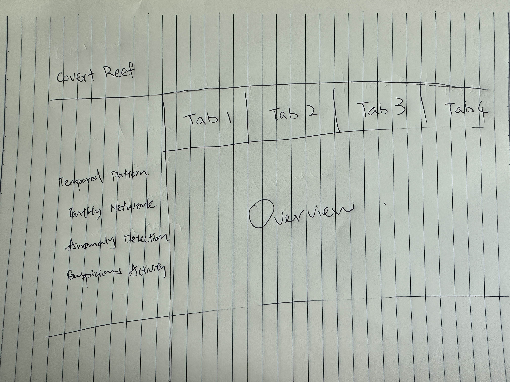

Take-Home Exercise 3
Introduction
This prototype module is developed as part of Take-home Exercise 3 for the ISSS608 Visual Analytics module. It builds upon the investigative storyline of Mini-Challenge 3 from VAST Challenge 202, where journalist Clepper Jensen seeks to uncover suspicious behavior and hidden relationships in the Oceanus community.
Using a knowledge graph constructed from intercepted radio communication data, this module aims to translate insights into a visual analytics prototype using Shiny. The goal is to assist Clepper in identifying patterns in communication behavior, revealing key influencers, and flagging potential anomalies for further investigation.
This prototype focuses on four analytical perspectives, which were collaboratively developed by my teammates and me. We divided the work across the following tasks:
Clepper diligently recorded all intercepted radio communications over the last two weeks. With the help of his intern, they have analyzed their content to identify important events and relationships between key players. The result is a knowledge graph describing the last two weeks on Oceanus. Clepper and his intern have spent a large amount of time generating this knowledge graph, and they would now like some assistance using it to answer the following questions.
- Clepper found that messages frequently came in at around the same time each day.
- Develop a graph-based visual analytics approach to identify any daily temporal patterns in communications.
- How do these patterns shift over the two weeks of observations?
- Focus on a specific entity and use this information to determine who has influence over them.
- Clepper has noticed that people often communicate with (or about) the same people or vessels, and that grouping them together may help with the investigation.
Use visual analytics to help Clepper understand and explore the interactions and relationships between vessels and people in the knowledge graph.
Are there groups that are more closely associated? If so, what are the topic areas that are predominant for each group?
- For example, these groupings could be related to: Environmentalism (known associates of Green Guardians), Sailor Shift, and fishing/leisure vessels.
- It was noted by Clepper’s intern that some people and vessels are using pseudonyms to communicate.
Expanding upon your prior visual analytics, determine who is using pseudonyms to communicate, and what these pseudonyms are.
- Some that Clepper has already identified include: “Boss”, and “The Lookout”, but there appear to be many more.
- To complicate the matter, pseudonyms may be used by multiple people or vessels.
Describe how your visualizations make it easier for Clepper to identify common entities in the knowledge graph.
How does your understanding of activities change given your understanding of pseudonyms?
- Clepper suspects that Nadia Conti, who was formerly entangled in an illegal fishing scheme, may have continued illicit activity within Oceanus.
- Through visual analytics, provide evidence that Nadia is, or is not, doing something illegal.
- Summarize Nadia’s actions visually. Are Clepper’s suspicions justified?
The Task for Take-Home Exercise 3
In this take-home exercise 3, we are required to select one of the module of your proposed Shiny application and complete the following tasks:
To evaluate and determine the necessary R packages needed for your Shiny application are supported in R CRAN,
To prepare and test the specific R codes can be run and returned the correct output as expected,
To determine the parameters and outputs that will be exposed on the Shiny applications, and
To select the appropriate Shiny UI components for exposing the parameters determine above.
Include a section called UI design for the different components of the UIs for the proposed design.
Prepare the prototype module report as Take-home Exercise 3 submission. The write-up of the take-home exercise must be in Quarto html document format and publish on Netlify on our own coursework page. The report must provide detail discussion and explanation of:
the data preparation process;
the selection of data visualisation techniques used; and
the data visualisation design and interactivity principles and best practices implemented.
Methodology
To build this prototype module, we adopted a structured visual analytics approach, starting from data ingestion to visual storytelling. The knowledge graph provided in Mini-Challenge 3 was first cleaned, transformed, and modeled using tidygraph. Communication patterns, relationships, and anomalies were then extracted through modular analysis and visualized using both static (ggplot2, ggraph) and interactive (plotly, visNetwork) tools.
The overall methodology consists of the following stages:
Data PreparationWe loaded and flattened the JSON-based knowledge graph, extracted nodes and edges, cleaned missing values, and validated the network structure for compatibility with tidygraph. Each entity was classified by type and sub-type to enable filtering and targeted analysis.Modular Task ExecutionEach of the four investigative tasks was assigned to team member, allowing parallel and comparison development:
- Temporal trends were analyzed by aggregating communication timestamps by hour and date.
- Entity relationships were explored through network graph layouts and centrality measures.
- Anomaly detection used Z-score normalization on daily message counts.
- Suspicious activity was investigated through person-to-person messaging analysis.
Prototype DevelopmentAll modules were translated into reactive components suitable for a Shiny application. Input widgets such as selectInput(), dateRangeInput(), and checkboxGroupInput() allow user-driven filtering, while outputs include plotlyOutput() and visNetworkOutput() for dynamic and exploratory analysis.Design and StoryboardingA UI storyboard was drafted to guide the layout of the final Shiny app, ensuring usability and clarity. Each module was built to function independently but integrate smoothly into the full application.
Required R Packages
To develop and deploy this Shiny prototype, a variety of R packages were used for data handling, graph analysis, and visualization. All packages are available on CRAN and have been confirmed to work in Shiny applications.
jsonlite– To parse JSON graph data.tidyverse– Core data science tools including dplyr, tidyr, and ggplot2.gtext– For formatting and annotating text.knitr– To render tables and enhance report output.lubridate– For parsing timestamps and managing time-based data.hms– For representing durations.scales– For axis formatting and custom label breaks.tidytext– For text mining preparation.tm– For classic text mining pipelines.SnowballC– For stemming in text analysis.SmartEDA– Exploratory data analysis toolkit.reactable– For interactive tables.highcharter– For advanced interactive charting.conflicted– To manage namespace conflicts between packages.
patchwork– For combining ggplot2 visualizations.ggraph– For static graph visualizations.tidygraph– For network structure modeling.igraph– For underlying network analysis functions.ggiraph– For interactive ggplot outputs.plotly– For interactive time-series and heatmap plots.wordcloud– For word frequency cloud visualization.ggh4x– For extended ggplot axis/facet formatting.visNetwork– For interactive network graphs.RColorBrewer– For accessible color schemes.circlize– For circular visualizations.ggalluvial– For alluvial flow diagrams.networkD3– For D3-based interactive network charts.leaflet– For map-based interactive visuals.
stringr– String manipulation.readr– Efficient reading of CSV/TSV data.dplyr– Data wrangling.ggplot2– Core plotting library.
Storyboard UI Design
Our storyboard is structured into multiple interactive modules, each thoughtfully designed to address a key investigative question arising from the Mini-Challenge 3 scenario. From uncovering temporal communication patterns to analyzing entity relationships, detecting behavioral anomalies, and conducting deep dives into suspicious individuals, each module plays a crucial role in supporting the overall narrative. This modular design not only enables users to explore the dataset from different analytical angles but also allows for progressive storytelling—starting broad with general trends and narrowing down to detailed, individual-level insights.
Section 1
Timeline Patterns: When Are People Communicating?
Reveal communication patterns over time. Detect whether activities are scheduled, bursty, or unusual across dates and hours.
- dateRangeInput(“date_range”) – Set observation period
- selectInput(“person_select”) – Focus on a specific person (e.g. Clepper Jensen)
- plotlyOutput(“heatmap_all”) – Hour-by-day communication heatmap
- plotlyOutput(“daily_trend”) – Line chart of total daily messages
- plotlyOutput(“person_heatmap”) – Heatmap of an individual’s daily behavior
- Users start here to understand the general communication rhythm
- Detect key activity windows like “Oct 10” peak
- Compare general vs. personal trends
- Pinpoint unusual bursts for deeper inspection in later tasks
Section 2
Entity Network: Who Talks to Whom?
Understand the structure of relationships – identify who is connected, who acts as a bridge, and where clusters form.
- checkboxGroupInput(“node_types”) – Filter node types (e.g., Person, Vessel, Organization)
- radioButtons(“layout_type”) – Switch layout between “Fruchterman” and “Kamada-Kawai”
- plotOutput(“ggraph_network”) – Static network plot with sub-type colors
- visNetworkOutput(“interactive_net”) – Interactive graph with search, highlight, hover
- Users visually explore key actors and the strength of their links
- Clusters expose suspicious tightly connected entities
- Node sizing and color help distinguish roles (e.g., centrality, type)
- Filter by sub-types to examine vessel or suspicious-only subgraphs
Section 3
Community Clusters: Are There Hidden Groups?
Expose natural communities or cliques through clustering algorithms and sub-type filtering (e.g., vessels tied to covert operations)
- selectInput(“cluster_focus”) – Choose clustering method or subgraph theme
- checkboxGroupInput(“subtypes”) – Focus only on specific subtypes (Suspicious, Vessel, etc.)
- plotOutput(“cluster_plot”) – Color-coded clusters
- Tooltip-based interaction to reveal group role, centrality
- Grouping allows storytelling around criminal or covert groups
- Users see hidden structures not obvious from the main network
- Focuses on abnormal cohesion between organizations, vessels, or aliases
Section 4
Anomaly Detection: Who’s Acting Unusual?
Quantitatively identify individuals showing abnormal behavior through message volume spikes or timing oddities.
- selectInput(“key_person”) – Pick from pre-defined key people list
- (Optional) sliderInput(“threshold_z”) – Tune Z-score threshold
- plotlyOutput(“zscore_plot”) – Z-score line chart
- plotlyOutput(“multi_person_trend”) – Overall trends for all key figures
- Highlights individuals with spikes outside normal range
- Connects behavioral change to potential events (e.g., Oct 12 – Rodriguez spike)
- Sets up next phase: focus on specific actors for message investigation
Section 5
Suspicious Actor Profile: What Is This Person Really Doing?
Zoom into an individual (e.g., Nadia Conti) and reconstruct message context: who she talked to, when, and what was said.
- selectInput(“suspect_person”) – Choose person of interest
- dateInput(“focus_date”) – Choose key suspicious date
- plotOutput(“top_contacts”) – Bar chart of top counterparts
- dataTableOutput(“msg_table”) – Full log of message content + timestamps
- (Optional) Text summary of communication patterns
- Reveal contact frequency: who the person talks to the most
- Content inspection shows tone, urgency, or hidden plans
- E.g., Oct 12 message planning linked to security shift & permit #CR-7844
- Strengthens case of coordination and secretive logistics
Prototype
